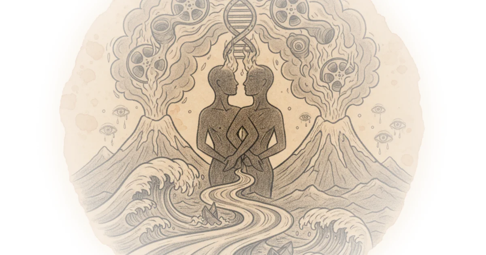

The Irishman, and the Death of Gangster Cinema Tom van der Linden · Like Stories of Old ·Sep 7, 2023 · 61 min read · Culture
The Last American Gangster Epic Tom van der Linden · Like Stories of Old ·Aug 31, 2023 · 50 min read · Culture
Goodfellas: The Peak of Gangster Cinema? Tom van der Linden · Like Stories of Old ·Aug 24, 2023 · 54 min read · Culture
Scarface, and the Unhinged, Neon-Lit Assault on the American Dream Tom van der Linden · Like Stories of Old ·Aug 17, 2023 · 47 min read · Culture
The Godfather, and the Birth of the Modern Gangster Epic Tom van der Linden · Like Stories of Old ·Aug 11, 2023 · 51 min read · Culture
The Oppenheimer Discussion (Full Spoilers) | Cinema of Nuclear Dread #3 Tom van der Linden · Like Stories of Old ·Aug 3, 2023 · 66 min read · Culture
Nuclear Fear and Atomic Monsters | Cinema of Nuclear Dread #2 Tom van der Linden · Like Stories of Old ·Jul 27, 2023 · 47 min read · Culture
Dr. Strangelove or: How the Bomb Became Relevant Again | Cinema of Nuclear Dread #1 Tom van der Linden · Like Stories of Old ·Jul 20, 2023 · 53 min read · Culture
Revisiting Indiana Jones and the Kingdom of the Crystal Skull | Cinema of Meaning #69 Tom van der Linden · Like Stories of Old ·Jun 29, 2023 · 53 min read · Culture
Arrival and Fear of Existence | Cinema of Meaning #68 Tom van der Linden · Like Stories of Old ·Jun 22, 2023 · 48 min read · Philosophy
What is Lost in The Grand Budapest Hotel? | Cinema of Meaning #67 Tom van der Linden · Like Stories of Old ·Jun 16, 2023 · 53 min read · Culture
When Two Filmmakers Make the Same Movie Tom van der Linden · Like Stories of Old ·Apr 25, 2023 · 15 min read · Culture 
The Apocalyptic Filmmaker that Haunts My Soul Tom van der Linden · Like Stories of Old ·Nov 30, 2022 · 29 min read · Culture
The Complete Philosophy of The Lord of the Rings Tom van der Linden · Like Stories of Old ·Nov 18, 2022 · 31 min read · Philosophy
Your Life is Not a Hero's Journey Tom van der Linden · Like Stories of Old ·Aug 29, 2022 · 54 min read · Philosophy
The Missing Key to Understanding Christopher Nolan Tom van der Linden · Like Stories of Old ·Mar 31, 2022 · 16 min read · Culture
Coming to Terms With The Last of Us: Part 2 – Complete Review and Analysis Tom van der Linden · Like Stories of Old ·Sep 30, 2020 · 45 min read · Culture
Lies of Heroism – Redefining the Anti-War Film Tom van der Linden · Like Stories of Old ·Aug 31, 2020 · 41 min read · Culture
The Philosophy of Terrence Malick | Full Documentary Tom van der Linden · Like Stories of Old ·Jun 14, 2020 · 19 min read · Culture
Stories as Identities: Who Are We Without Them? Tom van der Linden · Like Stories of Old ·May 31, 2020 · 18 min read · Philosophy
Your Life is Not a Hero's Journey Tom van der Linden · Like Stories of Old ·May 12, 2020 · 20 min read · Culture
The Fundamental Difference Between Stories And Reality Tom van der Linden · Like Stories of Old ·Apr 26, 2020 · 20 min read · Culture
Praying Through Cinema – Understanding Andrei Tarkovsky Tom van der Linden · Like Stories of Old ·Jan 23, 2020 · 13 min read · Philosophy
Unraveling Death Stranding's Existentialist Themes | Complete Review Tom van der Linden · Like Stories of Old ·Dec 22, 2019 · 40 min read · Culture
The Unfulfilled Potential of Minecraft – Assuming a Different Perspective Tom van der Linden · Like Stories of Old ·Oct 10, 2019 · 14 min read · Culture
The Witcher 3 – Virtual Empathy & Moral Reflection In Video Games Tom van der Linden · Like Stories of Old ·Jun 15, 2019 · 19 min read · Philosophy
The Inner Chronicle of What We Are – Werner Herzog Documentary Tom van der Linden · Like Stories of Old ·Feb 28, 2019 · 26 min read · Philosophy
In Search of the Distinctively Human | The Philosophy of Blade Runner 2049 Tom van der Linden · Like Stories of Old ·Jan 29, 2018 · 12 min read · Philosophy
Transcending Time | Interstellar's Hidden Meaning Behind Love and Time Tom van der Linden · Like Stories of Old ·Apr 22, 2017 · 13 min read · Culture